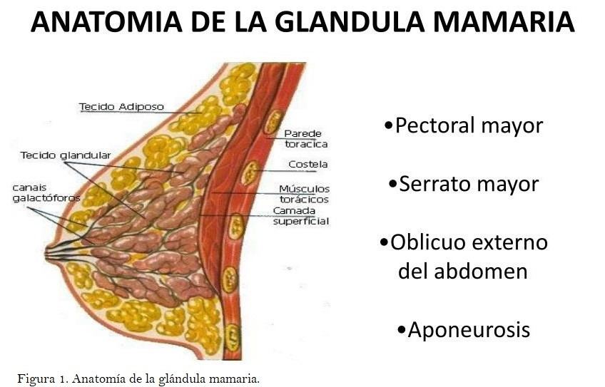

|
El cáncer es una división anormal y descontrolada de las células que provoca crecimientos localizados o tumores y que tiene la capacidad de diseminarse e invadir tejidos que en condiciones normales está destinado a otras células. Lo anterior resulta en un crecimiento totalmente anormal, progresivo e ilimitado que pone en peligro la función del órgano donde se desarrolla y finalmente compromete la vida del enfermo. Es una enfermedad crónico-degenerativa que se presenta con mayor frecuencia entre la población adulta. Sin embargo, si se diagnostica tempranamente se puede tratar exitosamente y aún curarse por completo (Alberts y col., 2004). |
VOLVERARRIBA |
|
 Anatomía de la mama adulta. La mama adulta se encuentra entre la segunda y la sexta costillas en el eje vertical, y entre el reborde esternal y la línea medioaxilar en el eje horizontal (Figura 1). Como término medio, la mama tiene un diámetro de 10-12 cm, siendo su grosor promedio de 5-7 cm. El tejido de la mama se proyecta también hacia la axila, formando la cola axilar de Spence. Está formada por tres estructuras importantes: piel, tejido subcutáneo y tejido mamario. El tejido mamario contiene tanto parénquima como estroma, el parénquima se divide en 15 a 20 segmentos que convergen en el pezón siguiendo una disposición radial. Los conductos colectores que drenan cada segmento tienen un diámetro de 2 mm, y los senos galactóforos subareolares tienen un diámetro de 5 a 8 mm, de 5 a 10 conductos galactóforos colectores se abren en el pezón y otros 5 a 10 conductos encontrados en el pezón son, en realidad, huecos ciegos. Cada conducto drena un lóbulo formado por 20 a 40 lobulillos. Cada lobulillo está formado por 10 a 100 alvéolos o unidades secretoras túbulosaculares. El estroma y los tejidos subcutáneos de la mama contienen grasa, tejido conjuntivo, vasos sanguíneos, nervios y ganglios linfáticos (DiSaia y Creasman, 1994).  Neoplasia mamaria. Todos los cánceres de mama invasivos derivan de la trasformación neoplásica del epitelio de la unidad terminal ductal-lobular de la mama. Los más frecuentes son los carcinomas ductales, que suponen entre el 65-80% del total. Aproximadamente, un 20% de los tumores muestran características morfológicas y crecimiento característicos que suelen conllevar a un mejor pronóstico que el carcinoma ductal típico. Entre ellos destacan los carcinomas lobulillares, tubulares, mucinosos o coloides, cribiformes, papilares y medulares. Otras variedades histológicas más raras son los carcinomas metaplásicos y los carcinomas adenoides quísticos. Los tumores que no corresponden a tipos especiales se suelen clasificar como no pertenecientes a un grupo especial (DiSaia y Creasman, 1994). |
VOLVERARRIBA |
|
El cáncer de mama se ha convertido en el tipo de cáncer más diagnosticado en el mundo,
desplazando en segundo lugar al de pulmón. A medida que los casos aumentan, una preocupación latente es el detectar de manera temprana a la enfermedad, concientizando sobre sus signos y
síntomas, para comenzar con un tratamiento eficaz. |
VOLVERARRIBA |